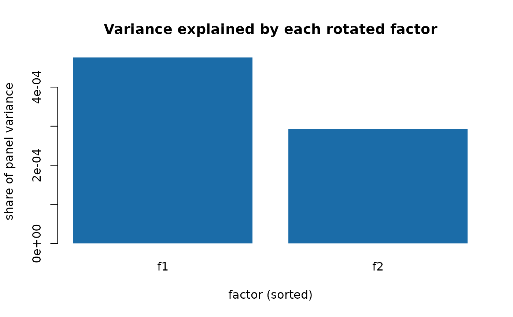
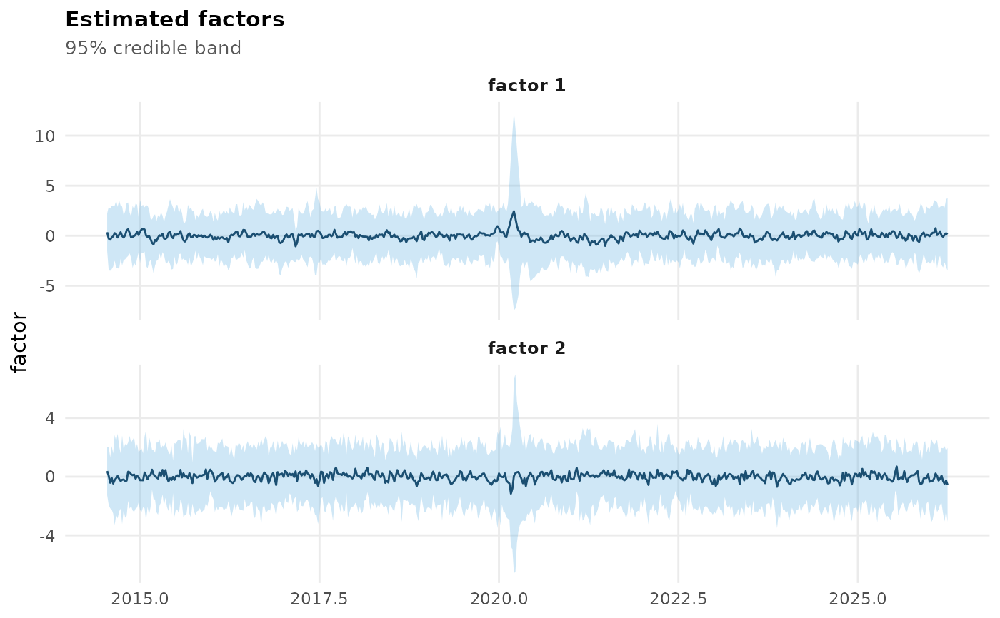
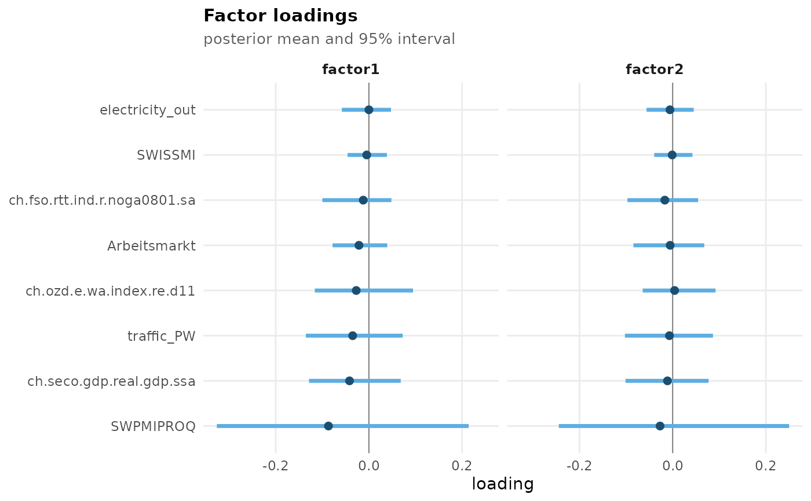
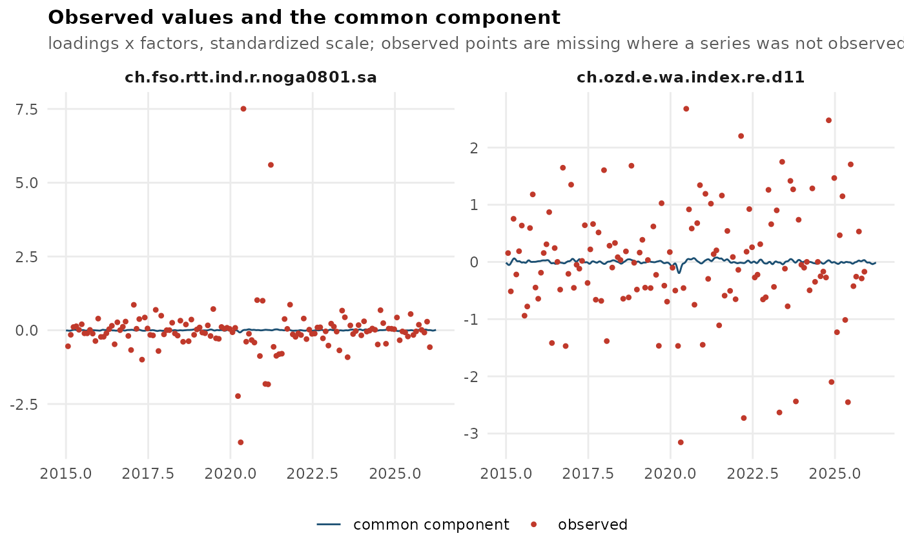

The generics supported by a fcast_dfm() fit. These mirror the
single-factor methods exactly – see ind_dfm_methods for what each one
does and for why there is no predict() method.
Usage
# S3 method for class 'fcast_dfm'
print(x, n_show = 8, ...)
# S3 method for class 'fcast_dfm'
coef(object, ...)
# S3 method for class 'fcast_dfm'
fitted(object, scale = c("standardized", "original"), ...)
# S3 method for class 'fcast_dfm'
residuals(object, scale = c("standardized", "original"), ...)
# S3 method for class 'fcast_dfm'
logLik(object, ...)
# S3 method for class 'fcast_dfm'
as.data.frame(x, row.names = NULL, optional = FALSE, ...)
# S3 method for class 'fcast_dfm'
plot(
x,
type = c("factor", "nowcast", "loadings", "residuals", "volatility", "fit"),
series = NULL,
level = 0.95,
...
)
# S3 method for class 'fcast_dfm'
autoplot(object, ...)
# S3 method for class 'fcast_dfm'
summary(object, ...)
# S3 method for class 'fcast_dfm'
screeplot(x, npcs = NULL, type = c("barplot", "lines"), main = NULL, ...)Arguments
- n_show
Integer, how many of the most recent periods
print()shows.- ...
Ignored, present for compatibility with the generics. For
autoplot(), passed on toplot().- object, x
A fit from
fcast_dfm().- scale
Character, the scale
fitted()andresiduals()report on:"standardized"(the default) or"original". As forind_dfm(); see ind_dfm_methods.- row.names, optional
Ignored, present for compatibility with the
as.data.frame()generic.- type
Character. For
plot(), which view to draw (see "Plot views" in ind_dfm_methods); forscreeplot(),"barplot"or"lines", as forstats::screeplot().- series
Character vector of series names, or a numeric vector of column positions, restricting the
"residuals"and"fit"views.NULL(the default) draws every series.- level
Numeric in
(0, 1), the coverage of the credible band drawn by the"factor"and"nowcast"views. Defaults to0.95.- npcs
Integer, how many factors
screeplot()shows, orNULLfor all of them.- main
screeplot()title, orNULLfor the default.
Value
As ind_dfm_methods, except that coef() returns a matrix and
screeplot() invisibly returns the sorted variance shares.
Details
coef() returns an n x q loading matrix here rather than a vector, and
as.data.frame() returns one mean/lower/upper triple per factor.
screeplot() shows the share of the standardized panel's variance explained
by each factor, computed from the posterior mean loadings and factors: the
factor's own variance times the sum of squared loadings on it, over the total
variance of the observed entries of the prepared data. The rotated factors
are not ordered by variance the way principal components are – the
post-hoc rotation has no such convention – so the bars are sorted for the
plot and labelled f1, f2, ... by their position in the fit, not by their
position in the plot. It is a description of a fitted model, not a selection
criterion; for choosing q before fitting, use select_factors().
As for ind_dfm() fits, the stored nowcasts are reached with
mfbdfm_nowcast().
logLik() uses the same definition as it does for ind_dfm() – see
"What logLik() means here" in ind_dfm_methods, including why AIC() and
BIC() are only approximate. The df count differs: the loadings are
unrestricted in sampling and identified post hoc by rotation, so
n*q - q*(q-1)/2 of them are counted as free, and the volatility
contributes a parameter only when stochastic_volatility = TRUE (with it
off the factor innovation variance is fixed at one and carries the
identification, where ind_dfm() still estimates a constant).
plot() offers the same views as ind_dfm_methods – "factor",
"nowcast", "loadings", "residuals", "volatility" and "fit" – and
returns a ggplot. The "factor" view gets one panel per factor here, and
"loadings" one facet per factor, with the series ordered by their loading
on the first factor so that a series sits in the same row of every panel.
See also
fcast_dfm(), ind_dfm_methods, mfbdfm_nowcast() for the
nowcasts
Examples
# \donttest{
data(mfbdfm_example_data)
fit <- fcast_dfm(mfbdfm_example_data, q = 2, length_sample = 20, burn_in = 5)
#> preallocating..
#> simulating posterior distribution..
#>
|
| | 0%
|
|=== | 4%
|
|====== | 8%
|
|======== | 12%
|
|=========== | 16%
|
|============== | 20%
|
|================= | 24%
|
|==================== | 28%
|
|====================== | 32%
|
|========================= | 36%
|
|============================ | 40%
|
|=============================== | 44%
|
|================================== | 48%
|
|==================================== | 52%
|
|======================================= | 56%
|
|========================================== | 60%
|
|============================================= | 64%
|
|================================================ | 68%
|
|================================================== | 72%
|
|===================================================== | 76%
|
|======================================================== | 80%
|
|=========================================================== | 84%
|
|============================================================== | 88%
|
|================================================================ | 92%
|
|=================================================================== | 96%
|
|======================================================================| 100%
#> running rotation of each draw..
#> Rotation iteration 1: convergence 5.23e-06
#> Rotation iteration 2: convergence 3.04e-06
#> Rotation iteration 3: convergence 2.98e-06
#> Rotation iteration 4: convergence 4.43e-07
#> Rotation iteration 5: convergence 2.84e-09
#> Warning: Rotation did not converge after 5 iterations (last change 2.84e-09, criterion "mean", tolerance 1e-09). Factor draws may not be rotated onto a common reference; consider raising `rotation_max_iter` in dfm_control().
#> running identification..
#> processing output..
fit
#> Multi-factor mixed-frequency dynamic factor model (Eckert et al. 2025)
#> Call: fcast_dfm(flows = mfbdfm_example_data, q = 2, length_sample = 20, burn_in = 5)
#>
#> series (n) : 8
#> factors (q) : 2
#> factor lags (p) : 1
#> periods (t) : 541
#>
#> Target series: ch.seco.gdp.real.gdp.ssa
#>
#> Most recent nowcasts (95% band):
#>
#> time observed nowcast lower upper
#> 2024.250 0.0078 0.0078 0.0078 0.0078
#> 2024.500 0.0029 0.0029 0.0029 0.0029
#> 2024.750 0.0052 0.0052 0.0052 0.0052
#> 2025.000 0.0079 0.0079 0.0079 0.0079
#> 2025.250 0.0012 0.0012 0.0012 0.0012
#> 2025.500 -0.0044 -0.0044 -0.0044 -0.0044
#> 2025.750 0.0015 0.0015 0.0015 0.0015
#> 2026.000 NA 0.0100 -0.0189 0.0390
#>
#> 1 of 45 periods have no observed value (nowcast/backcast).
#>
#> Full results: $factor, $ncst (all series), $data_hf, $target_series;
#> mfbdfm_nowcast() for the target's nowcasts
#> Tables: mfbdfm_table_loadings(), mfbdfm_table_parameters(),
#> mfbdfm_table_nowcast()
coef(fit) # a q-column matrix here, a vector for ind_dfm()
#> factor1 factor2
#> ch.fso.rtt.ind.r.noga0801.sa -0.0120862752 -0.016881013
#> ch.ozd.e.wa.index.re.d11 -0.0271445425 0.004152994
#> SWISSMI -0.0046837932 -0.001086471
#> traffic_PW -0.0348118875 -0.006993377
#> electricity_out 0.0000680888 -0.005881285
#> ch.seco.gdp.real.gdp.ssa -0.0415743570 -0.011205318
#> SWPMIPROQ -0.0867841729 -0.027084978
#> Arbeitsmarkt -0.0213389057 -0.005447732
screeplot(fit) # share of panel variance per rotated factor

head(as.data.frame(fit))
#> time factor1 factor1_lower factor1_upper factor2 factor2_lower
#> 1 2014.542 0.34747440 -1.556648 2.251596 0.38031034 -1.273450
#> 2 2014.562 -0.29183474 -3.451399 2.867730 0.05662948 -1.918274
#> 3 2014.583 -0.39894172 -3.509730 2.711846 -0.41551108 -2.153533
#> 4 2014.604 -0.17850839 -3.347064 2.990047 -0.08040423 -2.239604
#> 5 2014.625 -0.05919795 -3.087089 2.968693 -0.46838579 -2.517115
#> 6 2014.646 0.25966556 -2.492868 3.012199 -0.22720138 -3.299043
#> factor2_upper
#> 1 2.034071
#> 2 2.031533
#> 3 1.322511
#> 4 2.078796
#> 5 1.580344
#> 6 2.844640
logLik(fit)
#> 'log Lik.' -3298.464 (df=36)
BIC(fit) # approximate here - see ?ind_dfm_methods
#> [1] 6879.755
mfbdfm_nowcast(fit, last = TRUE)
#> time nowcast sd lower upper
#> 1 2026 0.01003606 0.01475351 -0.01888029 0.0389524
plot(fit) # one panel per factor

plot(fit, type = "loadings") # one facet per factor

plot(fit, type = "fit", series = 1:2)

# }